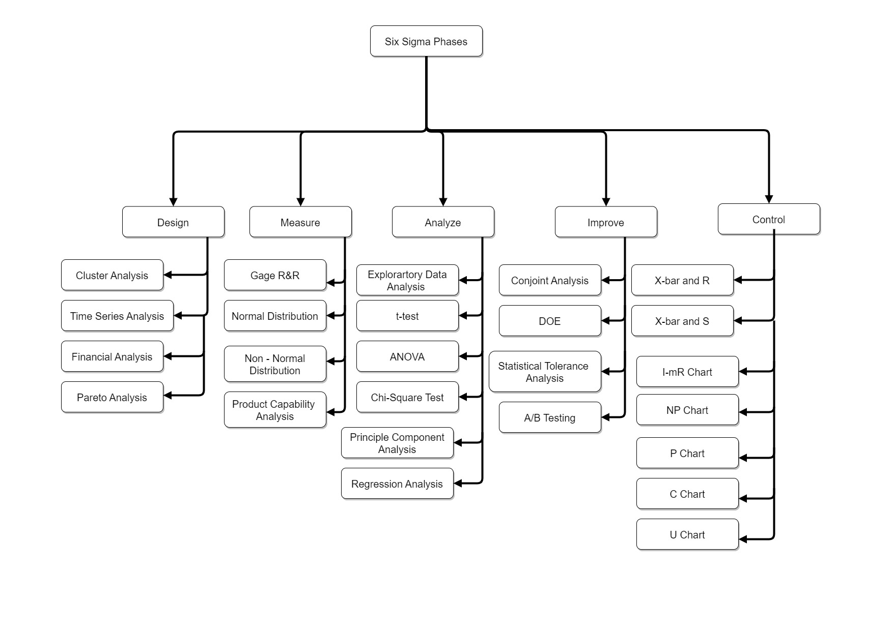

Thinklusive performed Data Analytics for a wide range of medical device manufacturing clients, it followed the Design, Measure, Analyse, Improve and Control (DMAIC) method strategy to ensure all the pieces of equipment were compliant with the necessary standards and Good Manufacturing Practices (GMP) were being followed.
Use the Download Button to download the file that shows the detailed architecture hosted on AWS.
DownloadThere was a vast range of medical equipment from various categories that underwent this check to ensure the batch was of high-quality output and those categories were: Medical Implants, Diagnostic Equipment, Infusion Pumps, Respiratory Equipment, Monitoring Devices, Surgical Instruments, Anesthesia Machines, Dialysis Machines, Laboratory Equipment, Patient Monitoring Systems, Electrocardiogram (ECG) Machines, In-Vitro Diagnostic (IVD) Devices, Radiation Therapy Equipment, Prosthetic Devices and Endoscopes.
With this system they are able to detect anomalies very early, There is continuous improvement so that there is better defect detection and process optimization and complaince was met consistently with high cost savings because they had less recalls, reworks and legal liabilities.